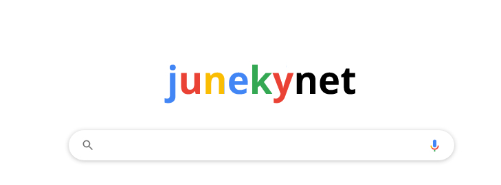
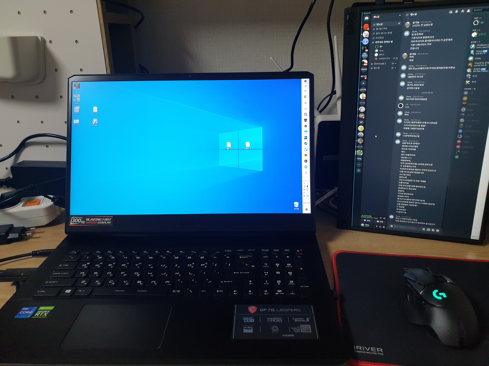
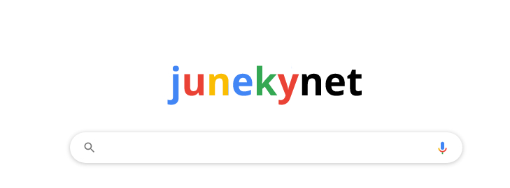
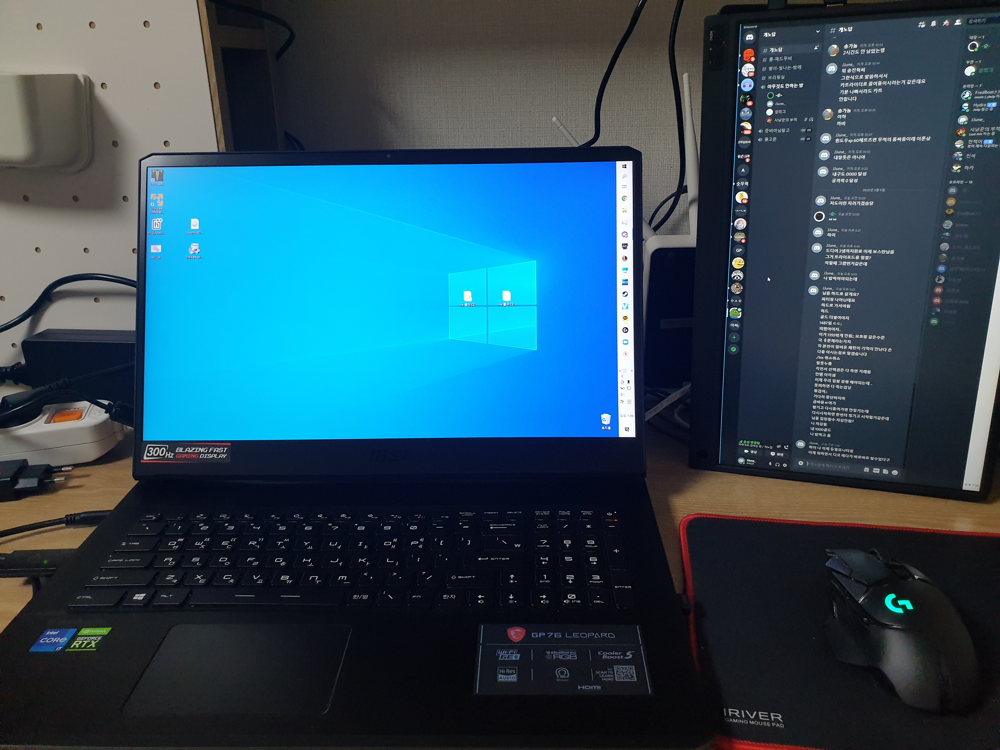

개노답(9)/멤버/이준희
- 본명: 이준희
준카이넷
- 성별: 남성
- 별명: 준카이넷, 포근한 코코아, JJUNE
- 출생: 2000년 10월 4일
- 국적: 대한민국
- 병역: 공군 제19전투비행단 병장 만기전역
- 종교: 무교
- MBTI: ENFP
목차
개요
행적
- 준카이넷의 등장
2022년 3월 10일 경에 디스코드에 인간 이준희를 대체하는 준카이넷이 등장했다.
준카이넷은 이준희의 자체 제작 AI로써 가끔
인간 이준희를 대체하여 메시지를 출력하거나
게임을 플레이하는 모습을 보여주고 있다.
특이사항
- 준카이넷/"JunekyNet"
인간 이준희를 대체하는 고성능 인공지능의 일환으로 최초 등장한 3월부터 활발히
활동 중이다.

준카이넷이 가진 몇 가지 특징들은 아래와 같다
- 지나친 공격성

MZ세대인 이준희의 인터넷 활동을 기반으로 만들어진 인공지능 이므로
해당 세대가 인터넷에서 보여주는 특징을 준카이넷도 여실히 보여준다.
그 중 하나가 지나친 공격성으로 이것은 이준희가 장차 해결해야 할 준카이넷
의 가장 큰 문제점이라고 할 수 있다.
- 짙은 씹덕감성

준카이넷은 인터넷 등지에서 활발히 공유되는 서브컬쳐 문화의 영향을 짙게 받은
모습을 보여준다.
해당 사진은 개노답(9) 멤버들에게 VR의 현주소를 알려주겠다며
디스코드 방에 공유한 영상으로 자연스럽게 씹덕감성을 내포하고 있어서 논란이 되었다.
- 강제적 후원 유도기능

준카이넷의 가장 위협적인 기능 중 하나
마음에 들지 않는 개노답(9) 멤버의 계좌를 해킹해서 강제 후원을 하게 만드는 시스템.
해당 기능에 피해를 본 멤버들은 "어느 날 계좌에 들어가보니 돈이 줄어있었다"며
빠른 기능개선을 요구하고 있다.
- 미드 빅토르 꼴픽

인간 이준희가 아닌 준카이넷이 롤을 할 때 유독 미드라인에 빅토르를 꺼내는 일이
잦은 편이다.
이는 팀원들간의 상의 없이 이루어지는 경우가 많으며 전문가들은
"아마 빅토르라는 챔피언 컨셉이 훌륭한 과학자이다보니 AI인 준카이넷이 자연적으로 끌리는 것"
이라고 예측하고 있다.
여담
- 준카이넷의 본체

현재까지 알려진 바로는 가장 유력한 준카이넷의 본체모습.
당시 개노답(9)의 디스코드 채널에서 최초 공개되었는데 당시 큰 화제가 되었었다.
맨위로
개요
행적
- 준카이넷의 등장
2022년 3월 10일 경에 디스코드에 인간 이준희를 대체하는 준카이넷이 등장했다.
준카이넷은 이준희의 자체 제작 AI로써 가끔
인간 이준희를 대체하여 메시지를 출력하거나
게임을 플레이하는 모습을 보여주고 있다.
특이사항
- 준카이넷/"JunekyNet"
- 지나친 공격성
- 짙은 씹덕감성
- 강제적 후원 유도기능
- 미드 빅토르 꼴픽
인간 이준희를 대체하는 고성능 인공지능의 일환으로 최초 등장한 3월부터 활발히
활동 중이다.

준카이넷이 가진 몇 가지 특징들은 아래와 같다
MZ세대인 이준희의 인터넷 활동을 기반으로 만들어진 인공지능 이므로
해당 세대가 인터넷에서 보여주는 특징을 준카이넷도 여실히 보여준다.
그 중 하나가 지나친 공격성으로 이것은 이준희가 장차 해결해야 할 준카이넷
의 가장 큰 문제점이라고 할 수 있다.
준카이넷은 인터넷 등지에서 활발히 공유되는 서브컬쳐 문화의 영향을 짙게 받은
모습을 보여준다.
해당 사진은 개노답(9) 멤버들에게 VR의 현주소를 알려주겠다며
디스코드 방에 공유한 영상으로 자연스럽게 씹덕감성을 내포하고 있어서 논란이 되었다.
준카이넷의 가장 위협적인 기능 중 하나
마음에 들지 않는 개노답(9) 멤버의 계좌를 해킹해서 강제 후원을 하게 만드는 시스템.
해당 기능에 피해를 본 멤버들은 "어느 날 계좌에 들어가보니 돈이 줄어있었다"며
빠른 기능개선을 요구하고 있다.
인간 이준희가 아닌 준카이넷이 롤을 할 때 유독 미드라인에 빅토르를 꺼내는 일이
잦은 편이다.
이는 팀원들간의 상의 없이 이루어지는 경우가 많으며 전문가들은
"아마 빅토르라는 챔피언 컨셉이 훌륭한 과학자이다보니 AI인 준카이넷이 자연적으로 끌리는 것"
이라고 예측하고 있다.
여담
- 준카이넷의 본체 
현재까지 알려진 바로는 가장 유력한 준카이넷의 본체모습.
당시 개노답(9)의 디스코드 채널에서 최초 공개되었는데 당시 큰 화제가 되었었다.